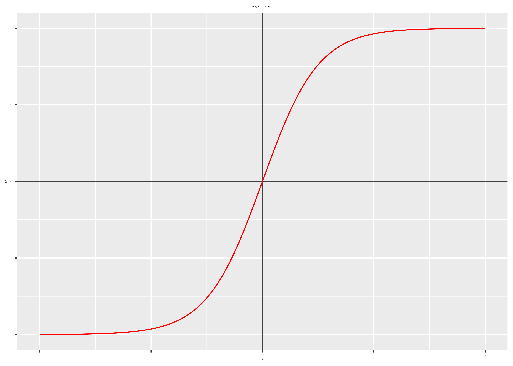
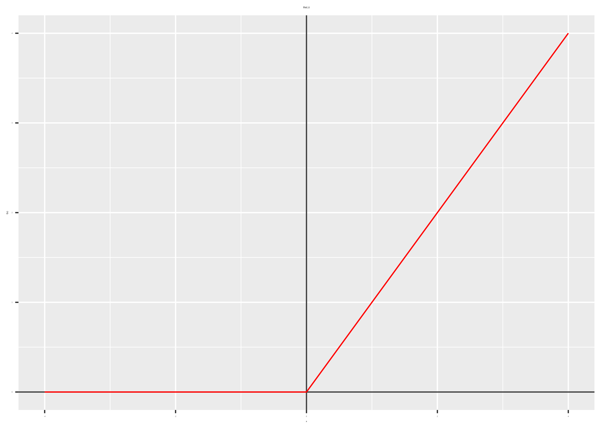
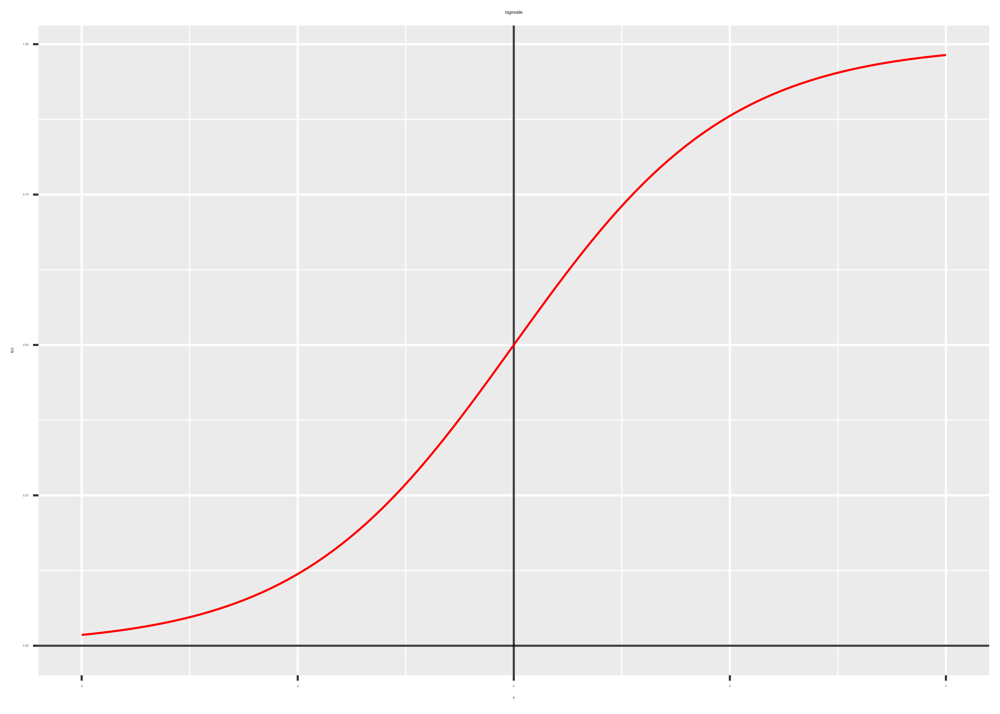
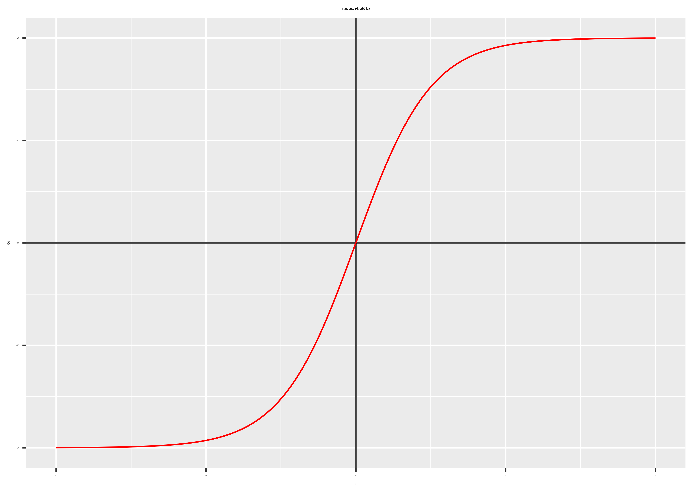
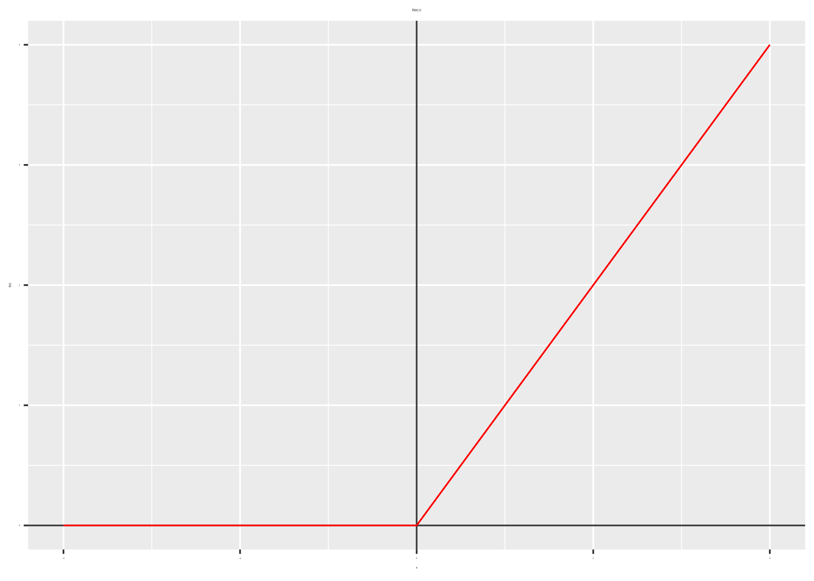

Capítulo 36 Redes neuronales artificiales
Noelia Vállez Enano y José Luis Espinosa Aranda
36.1 ¿Qué es el deep learning?
La inteligencia artificial es el conjunto de técnicas que hacen que cualquier elemento controlado por un computador sea capaz de realizar acciones similares a las que haría un humano en situaciones determinadas. Entre otros ejemplos podemos encontrar en la actualidad tanto robots que son capaces de realizar tareas de manera similar a un humano en una fábrica, las denominadas como casas inteligentes o los vehículos autónomos.
Dentro de las técnicas utilizadas para la inteligencia artificial, se encuentran las técnicas clásicas de machine learning, ya explicadas en capítulos anteriores de este libro, las cuales tienen la habilidad de aprender sin haber sido explícitamente programadas para una tarea en particular, pudiendo ser utilizadas para varios fines y aplicaciones.
A su vez, dentro de estos algoritmos, se pueden enmarcar como un subconjunto de las mismas las técnicas de deep learning, las cuales intentan simular tanto la arquitectura como el comportamiento del sistema nervioso humano, en particular, de las redes de neuronas que componen el encéfalo y que se encargan de realizar tareas específicas (Fig. 36.1). Para ello, estas técnicas se basan en el concepto de redes neuronales, que intentan emular la forma de aprendizaje de los humanos (Goodfellow, Bengio, and Courville 2016).

Figura 36.1: Inteligencia Artificial vs Machine learning vs Deep Learning
36.1.1 Diferencias entre las técnicas de machine learning tradicional y el deep learning
Como se vio en capítulos anteriores, las técnicas de machine learning tradicional requieren al inicio realizar una selección de las mejores características que representen el problema a resolver, y que puedan ser comprendidas por el algoritmo seleccionado de tal forma que sea capaz de solucionar el problema planteado.
Por ejemplo, en el caso de querer detectar una cara dentro de una imagen, sería necesario definir qué tipo de características servirían para detectar la misma, como podrían ser, a bajo nivel, determinados tipos de bordes de la imagen (Fig. 36.2). Estas características proporcionarían la base para detectar a medio nivel elementos de la cara como ojos, narices, orejas, etc. y, definitivamente a alto nivel, reconocer donde hay una cara dentro de la imagen.

Figura 36.2: Detección de bordes de una imagen mediante el método de Scharr
Esta elección de características requiere en muchas ocasiones de la intervención humana, por lo que puede llevar mucho tiempo y diversos experimentos de prueba y error hasta poder encontrar una combinación de características y algoritmos que permita resolver el problema planteado.
Debido a esto, nacen las técnicas de deep learning, las cuales tratan de simular el comportamiento de aprendizaje humano. Esto implica que, a diferencia de las técnicas de machine learning tradicional, son capaces de aprender cuales son las mejores características que permitirán representar el problema que se quiere resolver sin necesidad de la interacción humana a la misma vez que buscan la solución al mismo.
Por ejemplo, continuando con el ejemplo anterior de la detección de caras, mientras que en las técnicas de machine learning sería necesario explicarle al algoritmo que características base componen una cara para que sea capaz de reconocerlas, al utilizar deep learning únicamente sería necesario mostrarle suficientes imágenes de caras para conseguir que el algoritmo sea capaz de aprender a identificar una cara por si mismo.
La capacidad de aprender las mejores características necesarias por sí mismo hace que a nivel teórico las técnicas de deep learning puedan llegar a ser más potentes que el machine learning clásico, pero debido a la mayor complejidad del problema y, por consiguiente, al proceso de entrenamiento, también lleva a que que sean necesarios muchos más datos iniciales y una mayor potencia de cómputo.
Este hecho explica que, aunque las bases de las técnicas de deep learning como el algoritmo del descenso del gradiente (Kiefer and Wolfowitz 1952), el perceptrón (Rosenblatt 1958), los algoritmos de retropropagación y el perceptrón multicapa (Rumelhart, Hinton, and Williams 1986) y la primera red neuronal convolucional (LeCun, Bengio, et al. 1995), datan de varios años atrás, no sea hasta hace relativamente poco tiempo cuando ha podido empezar a utilizar estas técnicas gracias a:
La evolución en el hardware de procesamiento. En particular, debido a la mejora de la capacidad de paralelismo masivo durante el cómputo que proporcionaron las nuevas tarjetas gráficas al incorporar una gran cantidad de microprocesadores específicos, inicialmente, para representar modelos complejos 3D en los monitores, pero que han podido ser utilizadas para las técnicas de deep learning, llevando recientemente al desarrollo de tarjetas específicas para este fin .
Big data. La gran cantidad de datos que se generan y almacenan en la actualidad en el día a día, así como la mayor facilidad a la hora de trabajar con esos conjuntos de datos, han permitido cubrir la necesidad de datos iniciales necesarios.
La evolución del sofware. Recientemente ha habido un amplio interés tanto en buscar nuevos modelos para resolver todo tipo de problemas, como para mejorar las técnicas utilizadas para entrenar dichas redes neuronales, lo cual ha llevado a la creación y mejora de diversos frameworks y aplicaciones relacionadas con el entrenamiento y despliegue de redes neuronales. Entre ellos, serían destacables Keras, Tensorflow, Pytorch, Caffe2, Matlab y OpenVINO.
36.2 Aplicaciones del deep learning
Las posibles aplicaciones de las técnicas de deep learning son muy diversas y, gracias a la continua investigación desarrollada en el área en la actualidad, no hacen más que aumentar. A continuación se comentan algunas de ellas:
Clasificación de imágenes. Aunque la clasificación de imágenes dentro del área de la visión por computador lleva años presente, es con las técnicas de deep learning con las que se han logrado los mayores avances, en particular, utilizando las redes neuronales convolucionales. Estas redes permiten determinar a que clase, perteneciente al conjunto de clases utilizado para entrenar, pertenece una determinada imagen.
Detección de objetos. Permite localizar los objetos contenidos en una imagen y su tipología marcándose con un rectángulo. Por ejemplo, utilizando una cámara de seguridad instalada en una calle con este tipo de modelos sería posible localizar y diferenciar entre peatones y vehículos (Fig. 36.3).

Figura 36.3: Detección de peatones y vehículos utilizando una cámara térmica y técnicas de deep learning
Segmentación semántica/de instancias. De forma similar a la detección de objetos, la segmentación permite localizar objetos contenidos en una imagen, además de su tipología, pero en este caso se marcan utilizando una máscara a nivel de píxel. La segmentación de instancias además es capaz de diferenciar entre diferentes instancias de una misma clase aún cuando se encuentren situadas de forma contigua.
Reconocimiento del habla. Permite a un computador procesar el habla humana en formato escrito. En la actualidad existen varios asistentes inteligentes basados en esta tecnología que además son capaces de interpretar órdenes o instrucciones sencillas y actuar en consecuencia.
Traducción automática. Consiste en utilizar las técnicas de deep learning para traducir un texto automáticamente de una lengua a otra sin la necesidad de intervención humana. En la actualidad, no se limita únicamente a la traducción literal, palabra por palabra, del texto, si no que también tiene en cuenta el significado que tendría en el idioma original para adaptarlo al idioma destino (Fig. 36.4).

Figura 36.4: Traductor automático basado en Deep Learning
- Generación automática de imágenes/texto. Permite obtener desde una imagen un texto descriptivo que indique el contenido de la imagen, o al contrario, a partir de un texto descriptivo generar una imagen basada en dicho texto. Un ejemplo de este último caso sería Dall-E (Borji 2022) (Fig. 36.5).

Figura 36.5: Algunas salidas posibles del generador de imágentes a partir de texto Dall-E, para el texto a \(``\)cat with glasses studying computer vision in the space with the Earth in the background\("\)
- Automóvil autónomo. Las técnicas de deep learning están siendo claves para el desarrollo del vehículo autónomo, capaz de viajar sin la necesidad de la interacción de un conductor humano. Para lograr definitivamente un vehículo con estas características, es necesario que sea capaz de ver, tomar decisiones y conducir al mismo tiempo. Esto se consigue en la actualidad integrando la información de gran cantidad de sensores que obtienen datos en tiempo real sobre el entorno, como serían cámaras, LIDAR, radares o ultrasónicos entre otros, y que son procesados por varias redes neuronales con el fin de que sea capaz de tomar una decisión en cuestión de milisegundos (Fig. 36.3).
36.3 Redes Neuronales
Las redes neuronales artificiales (en inglés Artificial Neural Network (ANN)) tienen su origen a finales de los años 50 a partir del diseño del perceptrón por parte de Frank Rosenblatt (Rosenblatt 1958). Cada ANN está formada por un conjunto de elementos conocidos como ``neuronas” cuya organización está inspirada en la que siguen las redes neuronales de los seres vivos. Entre dos neuronas adyacentes existe una serie de conexiones a través de las cuales se envía la información como si de pulsos eléctricos se tratase. De forma aislada, cada neurona procesa la información recibida para producir un resultado que será utilizado por las siguientes neuronas con las que está conectada
Cada ANN tiene como objetivo resolver una tarea concreta. Por ejemplo, una ANN podría estar diseñada para reconocer un dígito o una letra a partir de una imagen. Para conseguir resolver dicha tarea, la red sigue un proceso de aprendizaje automático. Este proceso se conoce como ``entrenamiento” y requiere que se disponga de un conjunto de datos representativos de la tarea a resolver.
36.4 Perceptrón o Neurona
El elemento básico de toda ANN es el perceptrón o neurona. Se trata de un modelo artificial basado en las neuronas biológicas. Cada neurona tiene una serie de entradas y produce una única salida. Las entradas pueden ser variables extraídas de la tarea que se debe resolver o salidas de otras neuronas de la red.
Para calcular la salida, cada neurona realiza una suma ponderada de sus entradas utilizando una serie de pesos, \(\boldsymbol w\) donde \(w_i\in \mathbb{R}\), y añade un término constante,\(w_0\in \mathbb{R}\). Por tanto, cada neurona actúa como un clasificador lineal que puede separar dos conjuntos diferentes dependiendo de si la salida es positiva o negativa (Figura 36.6).

Figura 36.6: Estructura del perceptrón o neurona
Para cada vector de entrada, \(\boldsymbol x\), la neurona aplicará los pesos, \(\boldsymbol w\), como el producto escalar de ambos vectores:
\[\begin{equation} \boldsymbol w^{\prime} \boldsymbol x = w_0\cdot 1+w_1 \cdot x_1+w_2 \cdot x_2+\dots+w_n \cdot x_n . \end{equation}\]
Una vez obtenida la suma ponderada, se puede separar las entradas en dos conjuntos, obteniéndose como salida final un valor binario, siguiendo la fórmula:
\[\begin{equation} f (\boldsymbol w^{\prime} \boldsymbol x) = \begin{cases} 1 & \text{si $\boldsymbol w^{\prime} \boldsymbol x>0$}\\ 0 & \text{en otro caso} \end{cases} . \end{equation}\]
36.4.1 Aprendizaje
El proceso de aprendizaje del perceptrón busca el ajuste automático de los valores de los pesos. Estos pesos deben seleccionarse de forma que minimicen el error de clasificación cometido sobre un conjunto de entrenamiento. El conjunto de entrenamiento estará compuesto por un conjunto de muestras del que se conoce su clase:
\[\begin{equation} D = \{ (\boldsymbol x_1 , y_1 ), (\boldsymbol x_2 , y_2 ), \dots, (\boldsymbol x_m , y_m ) \}, \end{equation}\]
donde cada muestra, \(\boldsymbol x_i = (x_{i1},x_{i2},\dots,x_{in})\), pertenece a una de las 2 clases, \(y_j = \{ 0,1 \}\) .
El primer paso del aprendizaje o entrenamiento consiste en la inicialización de cada peso \(w_j\) a 0 o a algún otro valor aleatorio.
Tras ello, se calcula la clase estimada, \(\hat y\), en un momento determinado, \(t\), para cada muestra \(\boldsymbol x_i\) del conjunto de datos: \[\begin{equation} \hat y_i(t) = f(\boldsymbol w(t)^{T} \boldsymbol x_i) = f(w_0(t) + w_1(t) \cdot x_{i1} + \dots + w_n(t) \cdot x_{in}) . \end{equation}\]
Tras obtener la salida para todas las muestras de entrenamiento, cada uno de los pesos, \(w_j\), de la neurona se actualiza siguiendo la fórmula: \[\begin{equation} w_j(t+1) = w_j(t) + \lambda \cdot |y_i-\hat y_i(t)|\cdot x_{ij} . \end{equation}\]
donde \(|y_i-\hat y_i(t)|\) será 0 cuando la clase predicha coincida con la clase real de la muestra y \(\lambda\) es la tasa de aprendizaje. La tasa de aprendizaje debe seleccionarse de antemano y controla la variación de los pesos entre iteraciones. En algunos casos el valor de \(r\) es 0.
Los dos pasos anteriores se repiten hasta que el error de clasificación es menor que un cierto umbral o el número de iteraciones alcanza un cierto valor fijado. Normalmente se suele utilizar el número de iteraciones como criterio de paro puesto que no siempre es posible alcanzar una tasa de error más baja que la deseada.
36.4.2 Convergencia
El teorema de la convergencia del perceptrón dice que, en los problemas en los que haya dos clases linealmente separables, es siempre posible encontrar unos pesos que realicen la separación en un número finito de iteraciones (Novikoff 1962). Sin embargo, en la mayoría de los casos no es posible obtener un conjunto de variables que separen perfectamente las muestras de ambas clases. Por ello, es necesario el uso de ciertas estrategias que solucionen el problema de convergencia en estos casos. Algunas de las estrategias más utilizadas son:
Algoritmo Pocket: Guarda la mejor solución obtenida hasta el final del entrenamiento.
Algoritmo Maxover: Halla el margen de separación máximo permitiendo clasificaciones incorrectas.
Algoritmo de Voto: Se utilizan múltiples perceptrones combinando sus salidas.
36.5 Perceptrón Multiclase
Una extensión lógica del uso del perceptrón es su empleo en la resolución de tareas de clasificación donde existan más de dos clases (Haykin 1999). En ese caso se tendrá un conjunto de entrenamiento, \(D\), de \(m\) muestras:
\[\begin{equation} D = \{ (\boldsymbol x_1 , y_1 ), (\boldsymbol x_2 , y_2 ), \dots, (\boldsymbol x_m , y_m ) \}, \end{equation}\]
donde cada muestra \(\boldsymbol x_i = (x_{i1},x_{i2},\dots,x_{in})\) pertenezca a una de las \(c\) clases posibles:
\[\begin{equation} y_j = \{ 0,1,\dots,c-1 \} . \end{equation}\]
A diferencia del problema binario, en su versión multiclase lo que se definen son varios modelos, \(F\), uno para cada una de las \(c\) clases:
\[\begin{equation} F=\{f_0,f_1,\dots,f_{c-1}\}\\ f_j: \mathbb{R}^n \rightarrow \mathbb{R} . \end{equation}\]
En este caso la salida no se selecciona en función de si el valor obtenido es positivo o negativo, sino que se asigna la clase del modelo que obtenga el valor más alto tras aplicar los pesos a la muestra. Esta estrategia recibe el nombre de ``uno contra todos”:
\[\begin{equation} \hat y_i = argmax_j(f_j(\boldsymbol x_i))\\ j\in\{0,1,\dots ,c-1\} . \end{equation}\]
En muchas ocasiones lo que se obtiene no es un único valor con la clase asignada como salida, sino que se obtiene un vector con las salidas binarias de cada uno de los modelos empleados. En ese caso, el vector contendrá un 1 en la posición de la clase asignada y un 0 en el resto de clases. Por ejemplo, el vector \([0,1,0,0,0]\) representaría que una muestra ha sido asignada a la segunda clase en un problema de clasificación donde existen 5 clases posibles:
\[\begin{equation} [(f_1(\boldsymbol x_i)),(f_2(\boldsymbol x_i)),\dots,(f_c(\boldsymbol x_i))] . \end{equation}\]
36.6 Funciones de activación
Además de los pesos, toda neurona tiene asociada una función de activación. Esta función se encarga de transformar la suma ponderada de las entradas en el resultado final. En las secciones anteriores se ha utilizado una función de activación con umbral 0, pero existen muchas otras. Algunas de las más utilizadas se enumeran a continuación.
Para algunas de ellas, se ha implementado una función, plot_activation_function, que permite dibujarlas en R, y que se puede ver a continuación:
require(ggplot2)
plot_activation_function <- function(f, title, range) {
ggplot(data.frame(x = range), mapping = aes(x = x)) +
geom_hline(yintercept = 0, color = "black", alpha = 3 / 4) +
geom_vline(xintercept = 0, color = "black", alpha = 3 / 4) +
stat_function(fun = f, colour = "red") +
ggtitle(title) +
scale_x_continuous(name = "x") +
scale_y_continuous(name = "f(x)") +
theme(plot.title = element_text(hjust = 0.5))
}- Función lineal. Se trata de una función identidad donde la salida tiene el mismo valor que la entrada. Normalmente se aplica en problemas de regresión lineal. Por ejemplo, si se quiere predecir el número de días que lloverá en un mes determinado.
\[\begin{equation} f(x)=x \end{equation}\]
Y se representa gráficamente de la siguiente forma:
f <- function(x) {
x
}
plot_activation_function(f, "Lineal", c(-4, 4))
- Función umbral. Esta función recibe también el nombre de función escalón. Si el valor de entrada es menor que el umbral la salida será 0. En caso contrario, la salida será 1. Si el umbral es 0, la función se reduce a mirar el signo del valor analizado.
\[\begin{equation} f(x)=\begin{cases} 0 & \text{si $x<u$}\\ 1 & \text{en otro caso} \end{cases} \end{equation}\]
Se representa gráficamente mediante el siguiente código, el cual se corresponde con una modificación de la función plot_activation_function, ya que la versión original no mostraría de forma correcta la gráfica al requerir representar dos valores en la posición 0, el valor 0 y el valor 1 del escalón:
df <- data.frame(x = c(-4, -3, -2, -1, 0, 1, 2, 3, 4), f = c(0, 0, 0, 0, 1, 1, 1, 1, 1))
ggplot(data = df, aes(x = x, y = f, group = 1)) +
theme(plot.title = element_text(hjust = 0.5)) +
ggtitle("Umbral") +
scale_y_continuous(name = "f(x)") +
geom_hline(yintercept = 0, color = "black", alpha = 3 / 4) +
geom_vline(xintercept = 0, color = "black", alpha = 3 / 4) +
geom_step(color = "red")
- Función sigmoide. También conocida como función logística, se trata de una de las funciones más utilizadas para asignar una clase. Si el punto de evaluación de la función es un valor negativo muy bajo, la función dará como resultado un valor muy cercano a 0, si se evalúa en 0, el resultado es 0,5 y si se evalúa en un valor positivo alto el resultado será aproximadamente 1.
\[\begin{equation} f(x)=\frac{1}{1-e^{-x}} \end{equation}\]
Representándose gráficamente de la siguiente forma:
f <- function(x) {
1 / (1 + exp(-x))
}
plot_activation_function(f, "Sigmoide", c(-4, 4)) - Función tangente hiperbólica. El rango de valores de salida es [-1, 1], donde los valores altos tienden de manera asintótica a 1 y los valores muy bajos tienden de manera asintótica a -1 de forma similar a la sigmoide.
\[\begin{equation} f(x)=\frac{e^x-e^{-x}}{e^x+e^{-x}} \end{equation}\]
Siendo su representación gráfica de la siguiente forma:
tanh_func <- function(x) {
tanh(x)
}
plot_activation_function(tanh_func, "Tangente Hiperbólica", c(-4, 4)) - Función ReLU. Se trata de la unidad lineal rectificada (del inglés Rectified Linear Unit). Es posiblemente la función de activación más utilizada actualmente en redes neuronales (Nair and Hinton 2010).
\[\begin{equation} f(x)=\begin{cases} 0 & \text{si $x\leq 0$}\\ x & \text{en otro caso} \end{cases} \end{equation}\]
Y se representaría gráficamente de la siguiente manera:
rec_lu_func <- function(x) {
ifelse(x < 0, 0, x)
}
plot_activation_function(rec_lu_func, "ReLU", c(-4, 4))
36.7 Perceptrón Multicapa
Aunque el perceptrón puede representar muchos tipos de lógica, no es posible realizar con él la operación XOR (o exclusiva) que asigna un 1 a la salida cuando las dos entradas son distintas (Minsky and Papert 1969). El perceptrón multicapa o, en inglés, Multilayer Perceptron (MLP) surge para dar una solución a este problema.
Un MLP está compuesto por varias capas con neuronas. La primera capa será la capa de entrada, que recibirá la variables que representan los elementos del problema a resolver. Por otro lado, la última capa será, de forma similar a cada neurona individual, la salida del MLP. Entre ambas capas existirán una o más capas ``ocultas”. Las neuronas de una capa intermedia tienen como entrada la salida de la capa anterior y su salida es la entrada de las neuronas de la siguiente capa (Figura 36.7). Este tipo de capas también son llamadas densas o totalmente conectadas.

Figura 36.7: Estructura del perceptrón multicapa (MLP)
36.7.1 Aprendizaje
El MLP entra en la categoría de los algoritmos de propagación hacia adelante o feedforward ya que las entradas de las neuronas de una capa se combinan mediante la suma ponderada, pasan por una función de activación y el resultado es propagado a las neuronas de la capa siguiente. Este proceso se lleva a cabo desde la capa de entrada hasta la capa de salida.
Dado un conjunto de muestras de entrenamiento \(\{(\boldsymbol x_1, y_1), (\boldsymbol x_2, y_2), \ldots, (\boldsymbol x_n, y_n)\}\) donde cada \(\boldsymbol x_i \in \mathbb{R}^d\) e \(y_i \in \{0, 1\}\), la salida de la primera capa, \(\boldsymbol z_1\), para una entrada \(\boldsymbol x\) vendrá dada por la expresión:
\[\begin{equation} \boldsymbol z_1 = \boldsymbol W_{(1)}^{\prime} \boldsymbol x + \boldsymbol b_1 , \end{equation}\]
donde \(\boldsymbol b_1 \in \mathbb{R}^{h}\) es un vector con las constantes de la primera capa y \(\boldsymbol{W}_{(1)} \in \mathbb{R}^{h \times d}\) son los pesos de la capa. Tras aplicar la función de activación, \(g(\cdot)\), al vector intermedio, \(\boldsymbol{z}\in \mathbb{R}^h\), se obtiene:
\[\begin{equation} \boldsymbol{h_1}= g(\mathbf{z_1}) . \end{equation}\]
La salida de una capa intermedia, \(\boldsymbol{h_i}\in \mathbb{R}^h\), también está formada por variables intermedias que sirven de entrada a la siguiente capa. La función a calcular en la siguiente capa será por tanto:
\[\begin{equation} \boldsymbol h_2 = g ( \boldsymbol W_{(2)}^{\prime} \boldsymbol h_1 + \boldsymbol b_2) . \end{equation}\]
Siguiendo el mismo razonamiento, la salida de la última capa, \(\hat y\), y por tanto de la red, vendrá dada por:
\[\begin{equation} \hat y = g ( \boldsymbol W_{(n)}^{\prime} \boldsymbol h_{n-1} + \boldsymbol b_n ) . \end{equation}\]
Por ejemplo, si se tiene una red de tres capas la salida podrá calcularse como:
\[\begin{equation} \hat y = g ( \boldsymbol W_{(3)}^{\prime} \boldsymbol g ( \boldsymbol W_{(2)}^{\prime} \boldsymbol g ( \boldsymbol W_{(1)}^{\prime} \boldsymbol x + \boldsymbol b_1)+ \boldsymbol b_2 )+ \boldsymbol b_3 ) . \end{equation}\]
Para entrenar y ajustar los pesos de este tipo de redes es necesario realizar el ajuste de la combinación de todos los pesos de la red. De forma similar a la búsqueda de los pesos de una sola neurona, será necesario encontrar la combinación de valores que clasifiquen bien todas las muestras del conjunto de entrenamiento o, en su defecto, que fallen en el menor número de muestras posible o minimicen alguna otra función de coste. En este punto es donde entra en juego la propagación hacia atrás o backpropagation.
La propagación hacia atrás es el mecanismo por el que el MLP ajusta de forma iterativa los pesos de la red con el objetivo de minimizar una función de coste que mide lo bueno o malo que es el resultado obtenido en un momento determinado (Rumelhart, Hinton, and Williams 1986). Su único requisito de aplicación es que todas las operaciones de la red (incluidas las funciones de activación) sean diferenciables ya que se utiliza el algoritmo del descenso del gradiente para optimizar la función de coste.
El MLP utiliza diferentes funciones de coste según el tipo de problema a resolver. Para los problemas de clasificación, la función de coste más utilizada es la Entropía Cruzada Media (en inglés Average Cross-Entropy). Para un problema binario esta función de coste se calcula como;
\[\begin{equation} C(\hat{y},y,\boldsymbol W) = -\dfrac{1}{n}\sum_{i=0}^n(y_i \ln {\hat{y_i}} + (1-y_i) \ln{(1-\hat{y_i})}) + \dfrac{\alpha}{2n} ||\boldsymbol W||_2^2 , \end{equation}\]
donde \(\alpha ||W||_2^2\) con \(\alpha > 0\) es un término de regularización, L2, también conocido como penalización ya que penaliza los modelos complejos. \(\alpha\) es un hiperparámetro cuyo valor se establece manualmente.
Para los problemas de regresión, la función de coste se basa en el Error Cuadrático Medio:
\[\begin{equation} C(\hat{y},y,\boldsymbol W) = \frac{1}{2n}\sum_{i=0}^n||\hat{y}_i - y_i ||_2^2 + \frac{\alpha}{2n} ||\boldsymbol W||_2^2 . \end{equation}\]
Cada iteración en el proceso de aprendizaje estará compuesta entonces por dos etapas, una de propagación hacia adelante y otra de propagación hacia atrás. En la primera etapa se introducen los valores de entrada a la red y se propagan las operaciones y los resultados hasta obtener la salida final de la red. En la segunda, el gradiente de la función de coste es propagado hacia atrás para actualizar los valores de los pesos de todas las capas y acercarse más a los valores que minimizan la función de coste.
En el algoritmo del descenso del gradiente, \(\nabla C_{\boldsymbol W}\) se calcula y deduce de \(\boldsymbol W\). Formalmente esto puede expresarse como:
\[\begin{equation} \boldsymbol W^{t+1} = \boldsymbol W^{\prime} - \lambda \nabla {C}_{\boldsymbol W}^{t} , \end{equation}\]
donde \(t\) es el estado de la red en una iteración determinada y \(\lambda\) es la tasa de aprendizaje cuyo valor debe ser superior a 0.
Al igual que en el caso del perceptrón único, el entrenamiento terminará cuando se alcance un número máximo de iteraciones o la mejora en la función de coste entre dos iteraciones consecutivas no supere cierto umbral.
Durante el proceso de aprendizaje, es necesario guardar en memoria los resultados de cada una de las muestras del conjunto de entrenamiento. Si el número de muestras o el tamaño de la red son grandes, es posible que no se disponga del suficiente espacio. Para resolver este problema, en una iteración no se utiliza todo el conjunto de entrenamiento, sino que se utiliza un subconjunto de él llamado batch. El conjunto de entrenamiento se divide, por tanto, en un número de batches con un número de muestras por batch. Atendiendo a esta división, es posible definir una serie de hiperparámetros:
- Tamaño del batch. Número de muestras utilizadas en cada iteración para actualizar los pesos.
- Número de épocas. Número de pasadas completas sobre el conjunto de entrenamiento hasta terminar el proceso de aprendizaje.
- Número de iteraciones por época. Será el resultado de dividir el número total de muestras por el tamaño del batch.
Por ejemplo, si se tiene un conjunto de 55000 muestras y el tamaño del batch es de 100, cada época tendrá 550 iteraciones.
36.8 Instalación de librerías de deep learning en R: Tensorflow/Keras
El framework que se va a utilizar en este libro para trabajar con técnicas de deep learning será Tensorflow/Keras, debido a que es uno de los más completos en la actualidad, permitiendo realizar una configuración completa del proceso de entrenamiento y trabajar con diversos tipos de redes neuronales.
Para poder utilizar Tensorflow/Keras en R, es necesario realizar la instalación de la librería fuera de R. Por ello, si ya se dispone de una instalación del mismo sería posible utilizarla. No obstante, se recomienda seguir los pasos indicados a continuación para tener una instalación nativa de Tensorflow/Keras asociada directamente a R.
- Paso 1 - Librería de Tensorflow en R
El primer paso será instalar el paquete de tensorflow en R [].
install.packages("tensorflow")A continuación, será necesario tener una instalación de Conda en el sistema. Los usuarios tanto de Windows como de Linux/Mac podrán realizar directamente la instalación de una versión de Conda denominada Mini-Conda en el instalador del siguiente paso, la cual sería la opción recomendada para no tener que realizar una instalación externa de manera adicional.
NOTA
Otra manera disponible para los usuarios de Windows, pero no recomendada por los autores de este libro salvo que ya se disponga de Anaconda instalado, sería la de utilizar el programa y la librería directamente dentro de Anaconda, instalando una versión de R directamente en el sistema a través del siguiente link:
- Paso 2 - Instalación de tensorflow y keras
Para continuar la instalación se activará la librería de Tensorflow y se ejecutará la función install_tensorflow
library(tensorflow)
install_tensorflow()Al ejecutar esta función, los usuarios deberán marcar “Y” para aceptar la instalación de Mini-Conda, descartando aceptar la utilización de cualquier otro sistema Conda que pueda estar instalado previamente.
También se puede ejecutar la función install_keras del paquete keras para instalar Tensorflow [].
install.packages("keras")
library(keras)
install_keras()- Paso 3 - Confirmar la instalación
Para confirmar la instalación, se puede comprobar con los siguientes comandos (la salida puede variar según el equipo, pero la línea final tiene que ser similar a la indicada):
library(tensorflow)
tf$constant("Hellow Tensorflow")tf.Tensor(b'Hellow Tensorflow', shape=(), dtype=string)36.9 Ejemplo de red para clasificación
En esta sección se entrena una red neuronal artificial para reconocer o clasificar los dígitos manuscritos del conjunto de datos MNIST (https://en.wikipedia.org/wiki/MNIST_database). Cada una de las imágenes de este conjunto de datos tiene un tamaño de \(28\times28\) píxeles en escala de grises. En vez de extraer una serie de variables a partir de cada imagen, en este caso se utilizan cada uno de los \(28\times28=784\) píxeles como variable de entrada (Figura 36.8).

Figura 36.8: MLP para reconocimiento de dígitos manuscritos
36.9.1 Carga y visualización de los datos
El primer paso será cargar la librería keras que permite crear redes neuronales y conjunto de imágenes que se encuentra disponible públicamente:
library(keras)
mnist <- dataset_mnist()A continuación, se puede ver el contenido de las variables generadas, donde cabe destacar que el conjunto de datos MNIST ya viene separado en dos subconjuntos, uno para entrenamiento y otro para test, compuestos por 60000 y 10000 imágenes respectivamente. En ambos casos, estos datos se almacenan en la variable x.
names(mnist)
#> [1] "train" "test"
dim(mnist$train$x)
#> [1] 60000 28 28
dim(mnist$train$y)
#> [1] 60000
dim(mnist$test$x)
#> [1] 10000 28 28
dim(mnist$test$y)
#> [1] 10000Además, las imágenes de cada subconjunto vienen acompañadas de la clase a la que pertenecen (dígito contenido en la imagen). En ambos casos, esta etiqueta se almacena en la variable y. A continuación se muestra un pequeño ejemplo que permitirá mostrar alguna de las imágenes contenidas en el conjunto de datos de entrenamiento junto con la etiqueta representando el dígito contenido:
par(mfcol = c(4, 4))
par(mar = c(0, 0, 3, 0), xaxs = "i", yaxs = "i")
for (j in 1:16) {
im <- mnist$train$x[j, , ]
im <- t(apply(im, 2, rev))
image(
x = 1:28, y = 1:28, z = im, col = gray((0:255) / 255),
xaxt = "n", main = paste(mnist$train$y[j])
)
}Figura 36.9: Algunas imágenes del conjunto de entrenamiento
36.9.2 Preprocesamiento
Una vez cargados los datos y comprobado su contenido, es posible realizar algún tipo de preprocesado. Dependiendo del tipo de problema se podrán realizar unas operaciones u otras. Por ejemplo, cuando se trabaja con imágenes es muy típico estandarizar los valores de color de las imágenes para mitigar las diferencias producidas por las diferentes condiciones de iluminación.
En este caso, solo se va a transformar los valores originales de la imagen (en rango de 0 a 255) a valores entre 0 y 1 dividiendo cada valor por el máximo, 255:
mnist$train$x <- mnist$train$x / 255
mnist$test$x <- mnist$test$x / 25536.9.3 Generación de la red neuronal
El siguiente paso consiste en la generación de la red neuronal. Para ello, se define primero la estructura utilizando la interfaz sequential proporcionada por Tensorflow/Keras a través de la función keras_model_sequential:
model <- keras_model_sequential() |>
layer_flatten(input_shape = c(28, 28)) |>
layer_dense(units = 15, activation = "relu") |>
layer_dense(10, activation = "softmax")Como se puede observar, la red definida está compuesta por una capa de tipo flatten que se encarga de transformar los 28x28 valores a un vector de 784 elementos, para que a continuación una capa oculta dense de 15 neuronas con activación relu se encargue de realizar las primeras operaciones con esos datos. Al final, una última capa dense se encarga de obtener la probabilidad de que la imagen represente cada una de las posibles clases mediante una activación softmax106:
summary(model, line_length = 64)
#> Model: "sequential"
#> ________________________________________________________________
#> Layer (type) Output Shape Param #
#> ================================================================
#> flatten (Flatten) (None, 784) 0
#> dense_1 (Dense) (None, 15) 11775
#> dense (Dense) (None, 10) 160
#> ================================================================
#> Total params: 11,935
#> Trainable params: 11,935
#> Non-trainable params: 0
#> ________________________________________________________________Finalmente, es necesario compilar el modelo, indicando algunos de los parámetros de configuración necesarios para el proceso de entrenamiento, como la función de coste o pérdida, el optimizador a utilizar y las métricas a obtener:
model |>
compile(
loss = "sparse_categorical_crossentropy", # función utilizada para problemas de clasificación con varias clases
optimizer = "sgd", # stochastic gradient descent
metrics = "accuracy" # Precisión
)36.9.4 Entrenamiento
Una vez generada la estructura de la red neuronal y definida la anterior configuración, es posible entrenarla mediante la función fit(). Para ello, se le debe indicar el conjunto de imágenes de entrenamiento, x, que debe utilizar y sus clases correspondientes, y. Además de otros parámetros, se podrá configurar el número de epochs a entrenar (pasadas sobre el conjunto completo de entrenamiento), el tamaño del batch que se utilizará en cada iteración con batch_size (número de imágenes por iteración), qué porcentaje de elementos del conjunto de datos se utilizarán para validar el modelo con validation_split (imágenes utilizadas durante el entrenamiento pero solo para obtener una estimación real del error cometido) o la tasa de aprendizaje, learning_rate.
training_evolution <- model |>
fit(
x = mnist$train$x, y = mnist$train$y,
epochs = 10, batch_size = 128,
validation_split = 0.2,
learning_rate = 0.1,
verbose = 2
)Epoch 1/10
375/375 - 2s - loss: 1.6313 - accuracy: 0.5266 - val_loss: 1.0455 - val_accuracy: 0.7510 - 2s/epoch - 6ms/step
Epoch 2/10
375/375 - 1s - loss: 0.8433 - accuracy: 0.7881 - val_loss: 0.6409 - val_accuracy: 0.8434 - 1s/epoch - 3ms/step
Epoch 3/10
375/375 - 1s - loss: 0.6022 - accuracy: 0.8427 - val_loss: 0.5031 - val_accuracy: 0.8712 - 1s/epoch - 3ms/step
Epoch 4/10
375/375 - 1s - loss: 0.5047 - accuracy: 0.8656 - val_loss: 0.4381 - val_accuracy: 0.8830 - 1s/epoch - 3ms/step
Epoch 5/10
375/375 - 1s - loss: 0.4526 - accuracy: 0.8767 - val_loss: 0.4019 - val_accuracy: 0.8909 - 1s/epoch - 3ms/step
Epoch 6/10
375/375 - 1s - loss: 0.4201 - accuracy: 0.8854 - val_loss: 0.3764 - val_accuracy: 0.8959 - 1s/epoch - 3ms/step
Epoch 7/10
375/375 - 1s - loss: 0.3976 - accuracy: 0.8896 - val_loss: 0.3593 - val_accuracy: 0.8996 - 1s/epoch - 3ms/step
Epoch 8/10
375/375 - 1s - loss: 0.3809 - accuracy: 0.8939 - val_loss: 0.3463 - val_accuracy: 0.9022 - 1s/epoch - 3ms/step
Epoch 9/10
375/375 - 1s - loss: 0.3678 - accuracy: 0.8975 - val_loss: 0.3359 - val_accuracy: 0.9050 - 1s/epoch - 3ms/step
Epoch 10/10
375/375 - 1s - loss: 0.3571 - accuracy: 0.8997 - val_loss: 0.3289 - val_accuracy: 0.9064 - 1s/epoch - 3ms/stepTras el entrenamiento es posible ver su evolución mediante las gráficas de coste/pérdida y precisión:
plot(training_evolution)
Figura 36.10: Evolución durante el entrenamiento de la precisión y la pérdida de los conjuntos de entrenamiento y validación
Como se puede observar, la red entrenada tiene alrededor de un 90% de precisión para las imágenes en los conjuntos de entrenamiento y validación.
36.9.5 Test
Una vez entrenado el modelo, es posible aplicarlo sobre el conjunto de test. Para ello, se puede realizar la predicción sobre cualquiera de las imágenes mediante la función predict, obteniendo la probabilidad de que pertenezca a una determinada clase:
predictions <- predict(model, mnist$test$x)
head(round(predictions, digits = 3), 5)#> [,1] [,2] [,3] [,4] [,5] [,6] [,7] [,8] [,9] [,10]
#> [1,] 0.000 0.000 0.000 0.003 0.000 0.000 0.000 0.995 0.000 0.002
#> [2,] 0.009 0.000 0.836 0.024 0.000 0.009 0.119 0.000 0.003 0.000
#> [3,] 0.000 0.962 0.013 0.006 0.001 0.001 0.003 0.002 0.010 0.002
#> [4,] 0.999 0.000 0.000 0.000 0.000 0.000 0.000 0.000 0.000 0.000
#> [5,] 0.001 0.000 0.007 0.000 0.836 0.004 0.011 0.012 0.017 0.111También se puede utilizar la función evaluate para calcular tanto el coste o pérdida como la precisión de la red neuronal sobre el conjunto de test. Como se puede observar, se obtienen valores muy similares a los obtenidos durante el entrenamiento:
model |>
evaluate(mnist$test$x, mnist$test$y, verbose = 0)#> loss accuracy
#> 0.3310305 0.9045000Con la función predict se puede también generar la matriz de confusión de la red para evaluar qué pares de clases está confundiendo:
prediction_matrix <- model |>
predict(mnist$test$x) |>
k_argmax()
confusion_matrix <- table(as.array(prediction_matrix), mnist$test$y)
confusion_matrix#>
#> 0 1 2 3 4 5 6 7 8 9
#> 0 953 0 11 4 2 16 16 3 8 7
#> 1 0 1108 10 2 6 1 3 21 10 5
#> 2 4 3 901 27 5 11 14 27 13 6
#> 3 2 2 16 903 0 46 1 4 29 10
#> 4 1 0 16 0 899 16 12 9 11 43
#> 5 6 1 1 29 1 726 8 1 24 13
#> 6 9 4 19 3 10 21 902 0 10 0
#> 7 2 2 12 17 2 10 0 916 11 18
#> 8 3 15 35 20 10 38 2 3 839 9
#> 9 0 0 11 5 47 7 0 44 19 898En la diagonal principal podemos observar el número de aciertos que obtiene el modelo entrenado para el conjunto de test, mientras que el resto de valores indican en cuantas ocasiones una clase es clasificada de manera incorrecta como otra diferente. Estos resultados coinciden con el valor de accuracy calculado mediante la función evaluate previa.
36.9.6 Guardado y reutilización del modelo
Finalmente, es posible almacenar el modelo entrenado mediante la función save_model_tf, que genera una carpeta con la red que se puede cargar y reutilizar mediante la función load_model_tf.
save_model_tf(object = model, filepath = "model")
reloaded_model <- load_model_tf("model")
round(predict(reloaded_model, mnist$test$x[1, 1:28, 1:28]), digits = 4)#> [,1] [,2] [,3] [,4] [,5] [,6] [,7] [,8] [,9] [,10]
#> [1,] 2e-04 0 1e-04 0.0028 0 1e-04 0 0.9948 0 0.00236.10 Ejemplo de red para regresión
En esta sección se entrena una red neuronal artificial para predecir el precio de la vivienda según sus características en Madrid. Para ello se usará el dataset de Madrid_Sale disponibles en el paquete de R Idealista18, con datos inmobiliaros del año 2018 y que fue utilizado en el Capítulo @ref(#chap-feature). Para ello, se tomarán las siguientes 7 variables que se usarán para realizar la estimación:
- CONSTRUCTEDAREA. Metros cuadrados construidos.
- ROOMNUMBER. Número de habitaciones.
- BATHNUMBER. Número de baños.
- HASLIFT. Si tiene ascensor.
- DISTANCE_TO_CITY_CENTER. Distancia al centro de la ciudad.
- DISTANCE_TO_METRO. Distancia a la parada de metro más cercana.
- DISTANCE_TO_CASTELLANA. Distancia a la Castellana.
36.10.1 Carga y visualización de los datos
Considerando que ya se ha cargado previamente la librería keras, se carga el conjunto de datos indicando las variables a considerar:
library(idealista18)
data("Madrid_Sale")
variables <- c(
"CONSTRUCTEDAREA", "ROOMNUMBER", "BATHNUMBER",
"HASLIFT", "DISTANCE_TO_CITY_CENTER", "DISTANCE_TO_METRO",
"DISTANCE_TO_CASTELLANA"
)
x_madrid <- Madrid_Sale[variables]
x_madrid_mat <- unname(data.matrix(x_madrid))
y_madrid <- Madrid_Sale$PRICE
y_madrid_mat <- matrix(y_madrid, nrow = length(y_madrid), byrow = TRUE)El conjunto de datos contiene un total de 94815 elementos, que se dividirán en un 90% para entrenamiento y un 10% para test:
ind <- sample(c(TRUE, FALSE), length(y_madrid), replace = TRUE, prob = c(0.9, 0.1))
madrid_dat_train_x <- x_madrid_mat[ind, ]
madrid_dat_test_x <- x_madrid_mat[!ind, ]
madrid_dat_train_y <- y_madrid_mat[ind, ]
madrid_dat_test_y <- y_madrid_mat[!ind, ]36.10.2 Preprocesamiento
Una vez cargados los datos y comprobado su contenido, es recomendable la normalización de las variables contenidas en el conjunto de datos debido a su heterogeneidad. Aunque sería posible para la red neuronal el adaptarse a esta situación, ciertamente puede complicar el proceso de entrenamiento. Para ello, se utilizará la función scale en las variables predictoras y se dividirá la variable del precio entre 100000 para reducir su orden:
madrid_dat_train_x <- scale(madrid_dat_train_x)
madrid_dat_test_x <- scale(madrid_dat_test_x)
madrid_dat_train_y <- madrid_dat_train_y / 100000
madrid_dat_test_y <- madrid_dat_test_y / 10000036.10.3 Generación de la red neuronal
El siguiente paso consiste en la generación de la red neuronal. Para ello, al igual que en la sección 36.9.3, se define primero la estructura utilizando la interfaz sequential proporcionada por Tensorflow/Keras a través de la función keras_model_sequential:
model <- keras_model_sequential() |>
layer_dense(units = 128, activation = "relu", input_shape = 7) |>
layer_dense(units = 64, activation = "relu") |>
layer_dense(units = 16, activation = "relu") |>
layer_dense(units = 1)Como se puede observar, la red está compuesta por varias capas ocultas tipo dense, en las que las tres primeras tienen una activación relu. Al final, una última capa dense se encarga de obtener el valor de la estimación y, al contrario que en el ejemplo previo, no incluye ningún tipo de activación debido a que el valor de la misma ya es comprensible tanto para el modelo como para su interpretación, y cualquier función de activación restringiría el rango de valores que podría obtener.
summary(model, line_length = 64)
#> Model: "sequential_1"
#> ________________________________________________________________
#> Layer (type) Output Shape Param #
#> ================================================================
#> dense_5 (Dense) (None, 128) 1024
#> dense_4 (Dense) (None, 64) 8256
#> dense_3 (Dense) (None, 16) 1040
#> dense_2 (Dense) (None, 1) 17
#> ================================================================
#> Total params: 10,337
#> Trainable params: 10,337
#> Non-trainable params: 0
#> ________________________________________________________________Finalmente, se compila el modelo indicando los parámetros de configuración necesarios para el proceso de entrenamiento. En este caso la función de coste o pérdida se corresponderá con el error medio cuadrático y la métrica con el error medio absoluto:
model |>
compile(
loss = "mse", # mean squared error
optimizer = "sgd", # stochastic gradient descent
metrics = "mae" # mean average error
)36.10.4 Entrenamiento
Una vez generada la estructura de la red neuronal y definida la anterior configuración, se entrena la misma utilizando la función fit, configurando el resto de parámetros de forma similar a como se vio en la sección 36.9.4:
training_evolution <- model |>
fit(
x = madrid_dat_train_x, y = madrid_dat_train_y,
epochs = 50, batch_size = 512,
validation_split = 0.2,
learning_rate = 0.1,
verbose = 2
)Tras el entrenamiento es posible ver su evolución mediante las gráficas de coste/pérdida y error:
plot(training_evolution)
Figura 36.11: Evolución durante el entrenamiento de la precisión y la pérdida de los conjuntos de entrenamiento y validación
Como se puede observar, en este caso el modelo tiene aún posibilidad de mejora, ya que la pérdida sigue siendo alta y no se ha estancado, por lo que incrementando el número de épocas y el tiempo de entrenamiento se podría obtener un mejor resultado.
36.10.5 Test
Una vez entrenado el modelo, es posible aplicarlo sobre el conjunto de test mediante la función predict, obteniendo la estimación para cada una de las viviendas:
predictions <- predict(model, madrid_dat_test_x)
head(predictions, 5)
#> [,1]
#> [1,] 6.669374
#> [2,] 5.895504
#> [3,] 3.887646
#> [4,] 6.390513
#> [5,] 5.721725Y mediante la función evaluate se calcula tanto el coste o pérdida como el error de la red neuronal sobre el conjunto de test, el cual tendremos que multiplicar por 100000 para obtener el resultado en la escala original del conjunto de datos:
model |>
evaluate(madrid_dat_test_x, madrid_dat_test_y, verbose = 0)
#> loss mae
#> 2.4195166 0.9227165RESUMEN
En este capítulo se ha explicado en detalle el concepto de redes neuronales artificiales, incluyendo los elementos que la componen, desde el perceptrón o neurona básica hasta el perceptrón multicapa, pasando el perceptron multiclase, junto al proceso de aprendizaje de los mismos.
Además, se han definido las funciones de activación clásicas utilizadas en las redes neuronales artificiales, las cuales se encargan de transformar la suma ponderada de las entradas en el resultado final de la capa.
Finalmente, se han explicado los pasos necesarios para poder entrenar una red neuronal artificial utilizando la librería Tensorflow/Keras en R, resolviendo el problema de clasificación de dígitos manuscritos representado en el conjunto de datos MNIST y un problema de regresión para estimar el precio de viviendas según sus características representado en el conjunto de datos de Idealista18.
References
La activación softmax convierte un vector de número reales en una distribución de probabilidad.↩︎